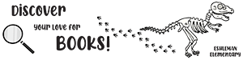

Madelyn Knaub's AENG 110 Printing Project |
||
| Home Photoshop Printing Infographic | ||
|
 Student at Millersville University |
This is my printing ptoject. in a group of 5, we each created our own bookmarks for Eshleman elemantary school in Penn Manor school district. We designed our bookmarks on indesign, and some of us uesd photoshop to edit online pictures to use. | |
|
© 2025 Madelyn Knaub | ||